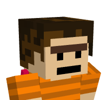

The Original Founder: Gavintino
Gavintino was the original creator of worm town
on the minecraft server SMP Online. He founded it
with his own viewers on the opening day of the server making
a safe haven for anyone who didn’t know where to live in
the early stages of the server making it a very welcoming
environment. Gavintino also went on to do big science with
the civilians of Worm Town proving they had
technological prowess. You can find out more of Gavintino
here and for Worm Science
check here
What originally started off as a silly joke has now begun to be a place for real community for worms of all kind to come together and share their joy wriggling around.


The New Founder: Pikboi
Pikboi inspired by Gavintino’s grand venture set out on
a journey of his own to make a Worm Town on a different
Minecraft server this time it’s Mirthcraft. Pikboi had a series
of events for the servers election that he used as opportunities
to promote and spread word of the Worm Town he was building
right beneath Mirth City’s nose. All of this came to a point when
Pikboi won the election to be part of the server’s admin team.
Hear the full story here
May our founders continue to thrive and wriggle through the dirt to make us a brighter and wriggly future for all of worm kind.